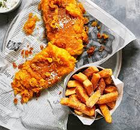

Fish and Chips

Description
A traditional British dish served all over the world, fish and chips
consist of crispy, golden-battered fish fillets paired with thick-cut,
deep-fried potato chips. This classic comfort food is often accompanied
by a sprinkle of salt and a dash of malt vinegar, with optional sides
such as mushy peas, tartar sauce, or a wedge of lemon. Celebrated for
its satisfying crunch and savory flavors, fish and chips embody the
essence of British culinary heritage, delighting diners with every bite
from quaint seaside towns to bustling urban eateries.
Ingredients
- about 1 litre sunflower oil, for frying
- 2 thick skinless fillets of whiting, ling, pollock, haddock or cod (about 150g each)
For the chips
- 2 large Maris Piper potatoes
- 1 tsp malt vinegar, plus extra to serve
For the batter
- 5g self-raising flour, plus extra for dusting
- 25g cornflour
- small pinch of ground turmeric
- 125g cold lager or fizzy water
Steps
-
Cut the potatoes into chips and soak in cold water for 5 mins,
then wash until the water runs clear. Tip into a pan of cold water
with a pinch of salt and 1 tsp malt vinegar. Bring to a simmer, then
turn down the heat and simmer gently for 10-12 mins until cooked
through but not falling apart. Drain gently, then place on a tray
in a single layer and chill until needed. Can be prepared a day
ahead.
-
When you’re ready to fry, prepare the batter. Tip the flours and
turmeric into a bowl with a pinch of salt, pour over the beer or
fizzy water, and mix quickly until everything just comes together
to the consistency of double cream – do not over-beat, a few lumps
are fine. Keep chilled.
-
Pour the oil into a deep, wide pan like a wok, or heat a deep-fat
fryer to 180C. If using a pan or wok, ensure that it is no more than
two-thirds full with oil. Heat the oil until it is shimmering and
carefully lower in the chips using a slotted spoon. Fry for 8-10 mins,
gently stirring occasionally until golden and crisp. Transfer to
kitchen paper to drain.
-
Put a little flour in a dish, then bring the oil you used to cook
the chips up to 185C, if you have a thermometer, or until a drizzle
of batter sizzles and crisps in less than a minute. Working quickly,
dust the fish in flour, then dredge through the batter. Hold the
fillet above the batter to let the excess drip back into the bowl,
then carefully lower into the oil. Fry the fillets for a minute
until the batter is just starting to set, then take a spoon and
drizzle the fillets with extra batter to create an even crunchier,
wispy coating. Fry the fish for about 4 mins, turning once, until
deep golden and crisp. Lift onto some kitchen paper to drain for a
minute, then serve with the chips. Also serve with salt and vinegar
if preferred.